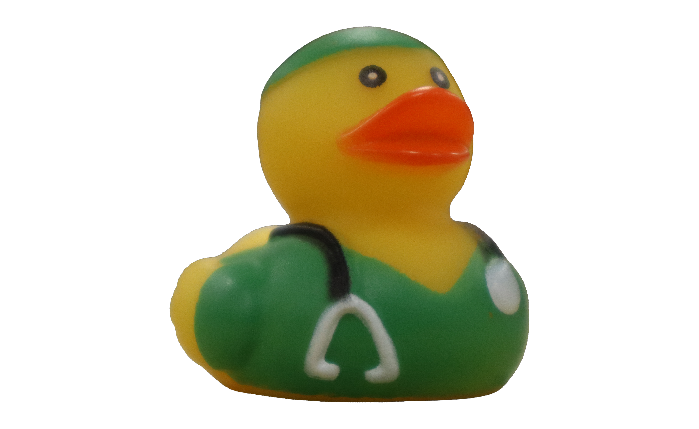
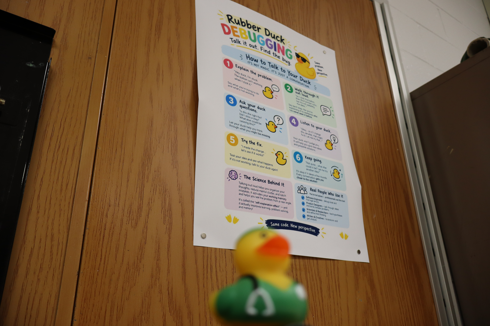

Also known as Mr. Webber this website has a lot on him.
In Toronto Chase was downtown in a nice restaurant having dinner when someone on one of the tables near him a stranger started choking on his food. Realizing this Chase jumped over to help, with his quick thinking, he performed a Heimlich maneuver saving the person from suffocating. Chase soon learned that this person's name was Jerome. The person who was eating with Jerome was Amy, Jerome's best friend. After Chase saved Jerome's life the three of them decided to stick together and discover Toronto. Later in the trip the three of them even visited Canada's Wonderland which is a theme park north of Toronto. Jerome noticed Chase really didn't enjoy the rides however he still went on them just because. For Chase it was a pretty memorable trip in the end.
While in Toronto Chase met and befriended strangers Jerome and Amy.